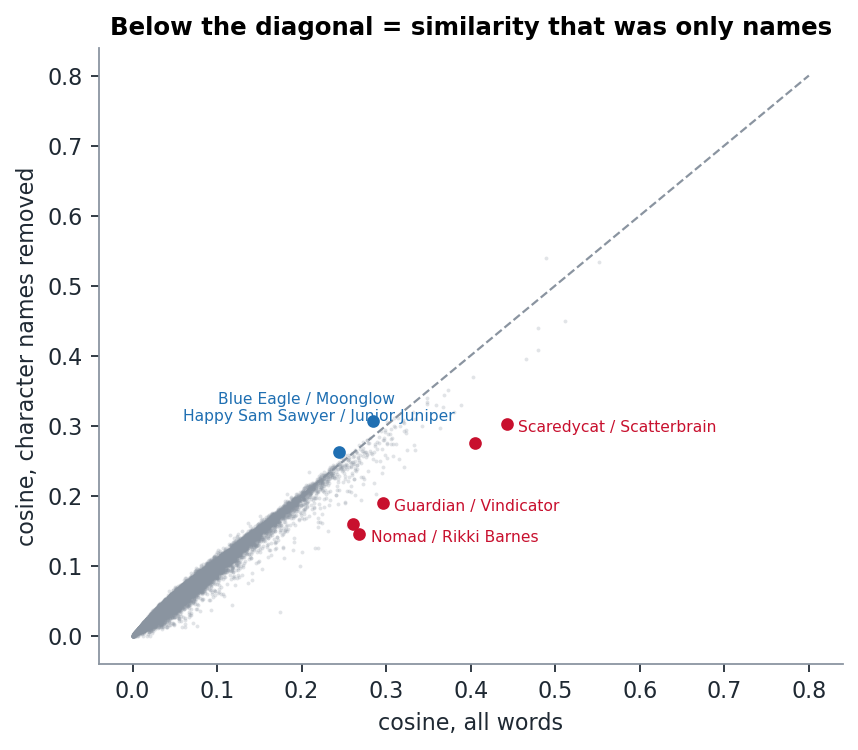

Week 6 · NLP II
Close in text, far in the network
TF-IDF says pages that link to each other read alike. The pairs that read alike without linking turn out to share a team, a resurrection or a writer, and removing character names does not remove the writers.
The question
Week 3 gave us one notion of "close": network distance. This week gave us another: TF-IDF cosine similarity between Wikipedia pages. We asked how much the two agree, and specifically: which characters are close in text but far apart in the network, and why?
The week page warned us about one trap. TF-IDF put Storm next to the Human Torch because the Human Torch is Johnny Storm. A rare surname is a very strong TF-IDF feature. So we ran everything twice: once on all words, and once with 625 character-name tokens removed. The names come from page titles plus the real names in the node blurbs ("Abomination (Emil Blonsky)"), minus generic words like man, captain or black.
Setup
TfidfVectorizerwith English stop words, sublinear TF, min_df = 2, max_df = 0.5. That gives 15,388 terms (14,910 without names).- Cosine similarity for all 45,753 pairs.
- Undirected shortest-path distance for every pair (or "no path").
Text similarity fades with distance

| network distance | 1 | 2 | 3 | 4 | no path |
|---|---|---|---|---|---|
| median cosine, all words | 0.144 | 0.076 | 0.046 | 0.032 | 0.031 |
| median cosine, no names | 0.136 | 0.076 | 0.048 | 0.034 | 0.033 |
Linked pages read about twice as alike as pages two steps apart. By distance 4, text similarity is as low as for characters with no path at all.
Removing names lowers the similarity of directly linked pairs a little (0.144 → 0.136). Neighbours mention each other by name, so part of their similarity is just "you say my name, I say yours". At larger distances, names make no difference.
Close in text, far in the network
After removing names, these are the most similar pairs at distance ≥ 3:
| pair | distance | cosine | top shared terms |
|---|---|---|---|
| Blue Eagle / Moonglow | 3 | 0.31 | squadron, supreme, overmind, redeemers |
| Happy Sam Sawyer / Junior Juniper | no path | 0.26 | sgt, howling, commandos, fury, kirby |
| Backhand / Scatterbrain | 4 | 0.26 | strikeforce, hordians, brent, gillis, anderson |
| Balder the Brave / Beta Ray Bill | 3 | 0.24 | asgardians, odin, asgard, surtur |
| Jean Grey / Mockingbird | 3 | 0.23 | busiek, story's, conclusion, wein |
Three different reasons:
- Same team, no links. Blue Eagle and Moonglow are both in the Squadron Supreme. Happy Sam Sawyer and Junior Juniper both served in Sgt. Fury and his Howling Commandos (1963). Sawyer is one of the week-1 isolates: no Marvel page links to him and he links to no one, but his text puts him right next to his old unit. This is real structure that the hyperlinks miss.
- Same writer. The Strikeforce: Morituri pairs share brent, gillis, anderson: Peter B. Gillis and Brent Anderson, the team that created them. Our name filter removed character names, but creator names are just as rare and just as strong in TF-IDF.
- Same plot device. Jean Grey and Mockingbird read alike because of Kurt Busiek. We went back to the text: Busiek is credited with devising the plot to revive Jean Grey, and in 1998 he briefly revived Mockingbird in Avengers vol. 3. Two heroines with nothing else in common share a resurrection writer.
How much was only names?

Pairs well below the diagonal were similar only because they share names. Mostly these are legacy codenames:
- Nomad, Jack Monroe, Rikki Barnes and Bucky: 0.26 → 0.15. Several people have held the Nomad and Bucky identities, and their pages are full of each other's names.
- Guardian / Vindicator: James and Heather Hudson, a married couple.
- Hawkeye / Ronin: both pages are about Clint Barton.
These pairs are all directly linked (distance 1), so the network already knew. Removing names showed that their text similarity was mostly that shared vocabulary.
Limitation
Our "names removed" version is not name-free: creator names (Gillis, Busiek, Kirby, Liefeld) and team names (Morituri, Squadron) survive, and they drive the strongest similarities. A next step would be to remove every proper noun (with a named-entity tagger) and check what is left. We suspect it would be much closer to "story" similarity, and much weaker.